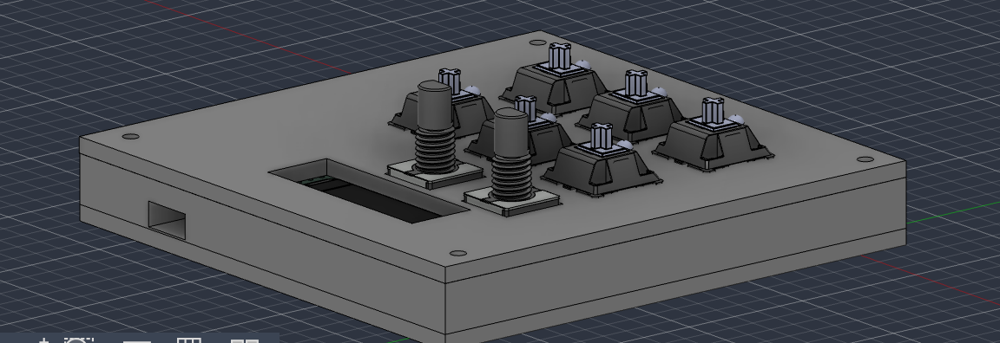
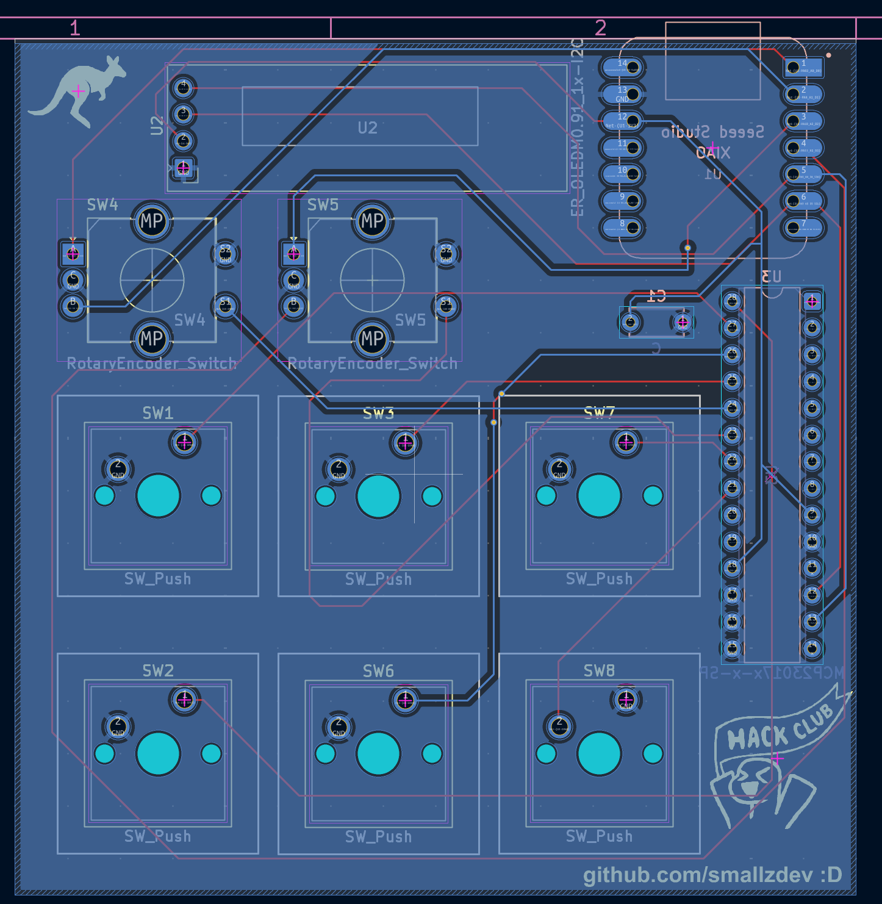

Date Updated: N/A
I made this project in stardance and used the hackpads guide to get started, and help me when I got stuck. This is one of my favourite projects so far, and I'm getting the parts to build it soon (can't wait)! Basically, this is a mini keyboard (macropad) designed for flight simulator 2024. I've always wanted one, so I thought that this quest was great! If you want to build you're own, click the button below. Make sure to also check out the readme for this project.


Made with ❤️ by Smallz :D